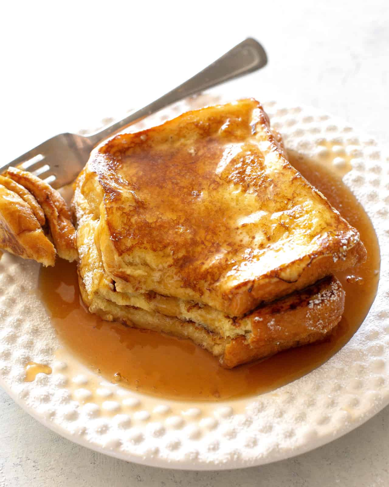

French Toast
Odin Recipes

Description:
French toast is a delightful breakfast dish made by dipping slices of bread in a mixture of beaten eggs, milk, and spices, then frying them until golden brown. It's often served with a sprinkle of powdered sugar, syrup, fresh fruit, or other toppings for a sweet and satisfying meal.
Ingredients:
- Bread
- Eggs
- Milk
- Cinnamon
- Butter
- Maple Syrup
Steps:
-
Prepare the Egg Mixture: In a shallow bowl, whisk together the eggs, milk, and a pinch of cinnamon until well combined.
-
Dip the Bread: Heat a skillet or griddle over medium heat and melt a small amount of butter. Dip each slice of bread into the egg mixture, ensuring both sides are well coated but not soaked.
-
Cook the French Toast: Place the dipped bread slices in the hot skillet. Cook until each side is golden brown, about 2-3 minutes per side. Serve hot with a drizzle of syrup.